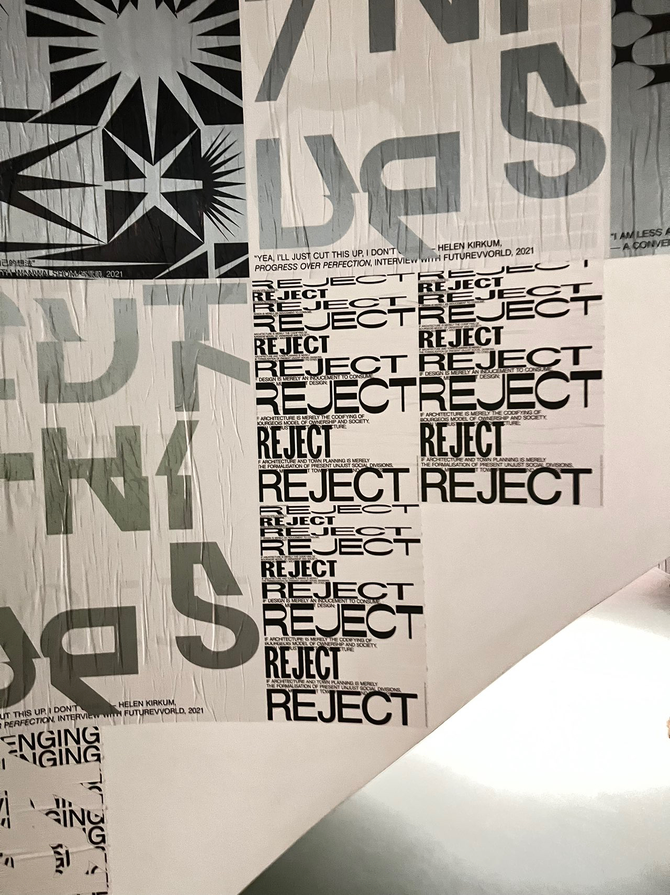

才发现距离上次发博客都过了两年半了，这之间发生了太多太多的事了。现在看到自己之前写的想法感觉很有意思，而我看别人的博客也受了很大启发，只恨自己之前没多写点。所以为了最小化遗憾，还是整理和补档一些日记，尝试记录大四这疯狂的一年中的各种随想吧！
长话短说，就是在美国交换时由于各种原因度过了一个自闭痛苦、没有结果的大三。我早就知道这样下去自己要完蛋了，而直到暑假我才在阴霾中正式迈出了脚步，开始“逃跑”，开始找工、实习，探索这个新世界，思考自己需要什么。因为啥都不知道，目标也是一降再降，一路半推半就。但没想到自己运气很好，大四上暗自定下的两个目标都达到了，收到了超出预期的offer，最终接受了香港的工作机会。大四下，我也度过了最美好的一个春天，在临近毕业时终于短暂地体会了真正向往的大学生活。
（摘抄）总的看来我似乎总是失败，忧愁，退而求其次，逃跑。——逃跑。把生活强加于我的，不满意的，统统甩掉。还有不错的运气。无赖汉的勇敢。
一些博客
先把干货放前面，我逐渐开始维护一个几乎每月都会重新读一遍的博客列表，感觉读这些博客温故知新，经常有新的感受。
- Connecting the dots.
- Keep looking. Don’t settle.
- Stay Hungry. Stay Foolish.
大四上
2022-09-13：无路可走
感觉还是要去申请学校啊，如果直接去找工，这种就业情况，没实习，还这么晚才开始找，还想达到某个薪资阈值，自己真的能复现之前ddd的路吗？
但申学校的话，申MS要今年攒攒钱。申PhD，推荐信必定要无限弱了。我真的适合搞研究吗，之前搞的方向让我极痛苦还卷，没啥可能申。现在连打算搞啥方向都不知道，没有有关申请方向的研究推大概也去不了好学校。
2022-10-24: 挂第一个面试
浅浅复盘一下失败原因：看了地里很多篇面经，某几个题反复考，以为是原题大战，把所有题的并集学会之后就飘了，以为稳了。结果真实考题全是C++八股，和面经的题分布完全不一样。所以不能迷信面经啊。
2022-10-28: 反思
好想暂停亿分钟
本周焦虑来源：挂本以为简单的重要面试（4天没回复，估计是无了）、被未来的各种可能及它们的ddl淹没
升血压助攻：被封小区无法出院子、由于学校不放出国而放弃两年前WF总决赛机会
发现除了和朋友打冷战热斗之外，实习搬砖甚至很快乐，因为只用说啥做啥，目标明确，而且似乎我比较善于搬砖。（注：2022.10我开始了一家小startup的软件工程师实习，也是我的第一个写代码的实习）
感觉大概率tier0矿场的未来无了，但其实最开始我就知道这条路虽好，但可能性不大，我不配。
可能这都是因为自己啥都想要，且不想降低自己的上限。希望自己不要把大二原有的好牌打烂，不要到最后山穷水尽，啥都没了…
2022-11-05：WF之痛
受covid影响，WF大陆队伍现状：
北京大学 教练带队参赛
4个大学 仅学生参赛
16个大学 无法参赛
作为因学校拒绝，无法参赛的，只能羡慕可以参赛队所在学校对此比赛的重视和开明的政策。
安慰自己：逆十字稳了啊，真去了也根本打不过啊orz。教练一起去，正是为了发表获奖感言和帮队员搬奖杯
2022-11-24
据称某厂开出了第一年365万港币的offer。我大为震撼！
2022-12-07
2019-2021: 我要申顶校PhD
2022年初：我想申普通校PhD
7月：我想活着
8月：我想申研究型硕士
9月：我想申研究型或工程型硕士，但缺钱
10月：我想直接找海外工
11月：我想申硕士或找国内工
12月：勉强找到国内工了
和自己和解了。随便吧！
（注：此时收到了唯一一个上海的offer，打算躺平了）
2022-12-12
趁着放开和周末，我终于来了场说走就走的旅游。抓住找几个朋友的蹭吃蹭喝蹭住海景房的机会，我第一时间来到了祖国最南端——三亚。
真的是放开了啊，没了许多繁琐流程，更能将精力放在旅游本身。三亚的街上人真的好少，各种游玩体验相当不错，可能因为大家还没反应过来可以旅游，我们是第一批吃螃蟹的人吧。（但东北人来过冬的真的好多，海南不愧是东北“第四省”）
在三亚湾休闲地捞了捞贝壳，在海棠湾体验了波刺激的涨潮。在水族馆看到了漂亮的水母、beluga (in real life)和头上有犄角的鱼！真希望能多待几天，可惜还要实习，暂时还不能完全躺平。真羡慕他们可以远程办公，全国到处旅游。
通过各种聊天也得知了朋友的许多秘密和动向。总的来说就是家家都有难念的经+大家都有光明前途🤣搞钱朋友的神秘故事还在延续，又有着新的烦恼。
沙滩边ddd和我计算了下，说这个offer也还可以了，和他第一份工作是comparable的。我也没得选！就这样吧！差不多得了！
感觉自己最近最大的收获可能还是意识到了友情、人脉、沟通的重要性。尽管自己社恐本质决定了我更喜欢在独处时恢复能量，但事实证明本科期间我为数不多的做的超过平均水平的事是靠朋友的，最近的许多机会乃至发展大方向也是通过朋友介绍的！
如果不出意外的话，完全躺平后直到毕业前的重心应该就放在旅游、培养一些业余爱好、找朋友玩上吧，让自己开心一点。总之就是抓紧上班前接近于gap半年的时间，高强度摸鱼吧
希望自己也能拥有一些神秘故事啊。能在这行干几年呢？（现在实习老板五年前在VC行业就职体验问题写回答说“五年后答，看看还在不在这一行”，然后五年后果然转行了😂）几年后看看能不能继续stay simple and sometimes naive，像现在这样写出前途未知但无忧无虑、充满信心的文字
后记：wzk打CCSP净赚1w，我在三亚旅游净支出几千，我们都有光明的前途！
2022-12-18 ICPC南京线上赛
From wzk:
这一次在电竞酒店打比赛，感觉有三个屏幕比较良好的台式机对于打在线pintia比赛还是很重要的。看到逆十字队在机房即可有这样的条件感到非常羡慕，啥时候……但是我已经是退役人了……
下次还是电竞酒店吧……
唉，对于比赛也没啥可说的，我开场就凸显演员本色，但是没把整件事情搞砸，可能还行吧。毕竟老年人了，打的再好也没啥用，最近也没WF可打，就算现在水平高也保持不了几天。不过我还是希望之后的比赛可以打的稍微好一点。
From cyy:
其实世界杯阿凡达什么的再好看也是别人的奋斗，别人的努力成果，人最大的快乐还是来自自我奋斗
两年不训练居然出线了，明年去埃及旅游
2023-01-03: 真结局？
秋招总结
大三荒废了。大一大二原计划申PhD，但到了申请季，目标一降再降，不小概率要申找工MEng了，又不想爆金币。暑假学了下知名crypto课CS251，于是想出国读书的同时找crypto厂远程打工补贴学费，也找了个crypto实习开始干，目标明确。
但10月惊闻曾有陆本cs牛人直接去华尔街quant厂港/新办公室！身边没相关实习但有硬核经历的朋友已经进了quant全职终面。这也是我第一次正式了解quant行业，看到地里华尔街矿厂的应届生薪资，只能用“抽象”形容。朋友声称前两轮只问了简单概率和编程，于是抱着开彩票的心态，我也跟风，投了几家swe和quant岗。做完oa，我非常高兴地接到了三个面试，于是疯狂刷绿皮书、一亩三分地面经，度过了一段充实时光。但没想到拿到面试已是唯一高光时刻，虽然有两场面得还行，最终却全止步于一轮游。看来自己还是差得太远了。
还是简历太差，菜是原罪。面试题答得好与不好，都不影响被拒的结局。复盘下来，虽然自己擅长做概率和算法题，但缺少硬核经历，陆本更没法和美本比，所以达不到quant的bar；而swe岗，我没trading firmC++实习，是硬伤。如果之前的时间没有荒废，搞个trading firm实习，至少能提高期望面进的轮数吧…
11月，知道自己几斤几两后，重心还是回到了留学申请上。但还是赶着秋招末尾投了几家国内量化。没想到一个厂量化岗进度飞快，特别顺利地通过了。顿时感觉心里紧绷几个月的弦松下来了，也不知道是不是被之前几次拒绝耗尽了精力，自己主观地把工作而非留学作为更倾向于的出路了。
曾经自认为是一个保守而有计划的人，习惯于长期坚持的付出，会进行系统的调研来做选择，喜欢确定性。但最近我则是几周变一个想法，秋招更是缺乏系统准备和计划，开始太晚，各种决策也十分主观。幸好最终没有山穷水尽。如果重来，我一定暑假就开投，且至少把已知的靠谱工作和行业都投下。
不过至少，最近我的体会是，正如byvoid博客所说，世界竟如此宽广！X应届毕业通过香港Jane Street面试；Y放弃巨大光环高薪工作，加入crypto创业厂，成为数字游民，来去自由；Z退学美本去trading厂全职然后创业，他们都有光明的前途！所以不一定要走前人铺好的路！
希望我未来不会山穷水尽，无路可走吧。
真结局?
寒假
2023-01-14
From wzk: 输了，但是到现场吃饭了
Dots start to connect…
2023-02-02 ～ 2023-02-10 香港-上海之旅
注：截止2023年10月8日，事实证明和ddd的这一趟香港-上海之行成为了各种意义上年度收益最大的旅行。
2023-02-06
怎么搞钱啊？
润港。
2023-02-07
彻底失败。

2023-02-09
昨天玩得好开心，也学到很多
2023-02-24
算法竞赛魔怔人是没有前途的
任何魔怔人都没有前途
学术魔怔人也是没有前途的
必须要深刻地思考自己想要什么
2023-02-24
赢了。
大四下
到了大四下，好像更喜欢水群、聊天了，因此最认真记录的东西居然似乎是梦。当时我详细地记录了每天做梦梦见了啥。不过也只在2023-02-20 ～ 2023-06-08进行了记录，之后要么不做梦，要么根本记不起梦见了啥，很奇怪。感觉这可能也是我最惬意、最没有压力、最觉得自己生活在一个完美模拟世界的阶段吧！平时想去哪儿就去哪儿，天天无忧无虑地玩，和朋友聊天。即使有看似重要的选择，也都可以轻松应对，要么是早已有十足信心，要么是错了自己也不在乎，反正nothing is at stake！生活就像玩一个不可能有坏结局的游戏一样。
这种感觉持续直到毕设论文deadline临近、毕业真的到来、离飞香港越来越近为止。
2023-03-24 EC Final
- Optiver Ready Trader Go，真实让我有了一种回到了训练巅峰时期的渡渡鸟的感觉。结果狂肝的比赛CE了，好痛苦。
- EC Final不出意外的爬了。
- 华为挑战赛，我去医务室换药迟到了半小时，漫不经心写了个垃圾算法，结果好像排得很靠前，比ready trader go得的奖金好像都多。
2023-05-15: Monkey Business
摘抄
Our first full-year compensation after signing on full-time at DLJ following business school was about eight times what the average college graduate earns at his first job, and we could expect that compensation to double every two years. We traveled the country by private jet, stayed in the best hotels, and ate in the best restaurants. Eventually, though, we realized that the compensation levels and the perks weren’t in place because being an associate in investment banking was a great job. They were in place because the job sucked. The one immutable truism that exists for bankers is that any problem can be solved by throwing enough money and time at it. The implication? The banker’s greatest enemies are those people whose souls are not for sale, and those who realize that time is a nonrenewable commodity.
The higher a monkey climbs, the more you see of his ass. —General Joseph Stilwell
Finally, there are the analysts. Monkeys. Tons and tons of little monkeys. Not humans, just monkeys crawling all over each other and pulling lice out of each other’s fur. Those are the analysts.
You didn’t tell a monkey to make a merger model for you and then expect that there wouldn’t be any mistakes. You had to check the monkey’s work, because monkeys were always liable to leave a few banana peels lying behind.
2023-06-03
摘抄：计算机本科找高薪工作速通路线
最速通：转学美本，除了需要本金、H1B中签率低、难润等问题外彻底成功
不转学美本，一种方向是量化厂（对冲基金hedge fund/自营交易prop shop）的quant researcher/developer，理想路线：拿个OI/ACM ICPC/数竞/物竞/etc的还行的奖，搞个LinkedIn认识各种前辈来各种network，大一日常处理文化课，做国外lab，享受生活，暑期去实习；大二日常随缘实习/享受生活，暑期实习去谷歌step（女生）或大厂或内资比较顶的量化厂；大三日常随缘实习/享受生活，暑期找到上海或HK或SG顶尖外资fund量化实习，大四拿实习转正或秋招面进HK/SG顶尖外资fund，拿五十万刀的global pay走上人生巅峰
摘抄：ChatGPT：揭示某些计算机本科和顶尖本科之间的显著差异
我让ChatGPT写一篇散文，结果我发现他写的挺有意思！我就发上来了
以下是一些我个人的观察和体会，主要来自我在本科期间的经历。请注意，我所描述的只是一种现象，并不具有普遍适用性。这篇文章旨在描述一种情况，而我并不知道在这种情况下的正确答案是什么，需要读者自行思考。
在我读计算机本科期间的主要观察是，有一些人在一开始就限制了自己的发展空间，将本科视为一个投篮活动。例如，他们迷恋追求高绩点，或者一开始就确定自己要走某条特定的道路。这种模式存在一个问题，那就是他们很少对自己的人生进行深思熟虑，很多时候只是盲目追随他人的目标，根本不知道自己是否真正喜欢所设定的目标，也没有意识到其他可供选择的机会成本。
以攻读PhD，博士学位为例。有许多人甚至不知道自己是否对学术感兴趣就申请了博士学位，结果发现自己并不喜欢自己所研究的领域。其中更令人担忧的是攻读博士学位和从事学术研究所需的时间成本。一般来说，攻读博士学位需要大约6年的时间，而某些领域要想获得教职可能还需要进行一些博士后研究，总体上需要花费不少于10年的时间。如果在不清楚自己的兴趣所在的情况下去尝试从事学术研究，结果可能就是将20到30岁的宝贵时光全部用于一件自己完全不感兴趣的事情上。仔细想想，这是多么可怕的情况。人生如此短暂，考虑到人的生理特点，这10年可能已经占据了人生总产出的四分之一以上。如果需要付出极高的努力去做某件事，那么这可能是唯一的机会。
在我与一些来自排名靠前的国外大学的本科生交流中，我发现他们的氛围与某些本科生完全不同。他们的同学往往在寻找工作机会。当然，并不是因为他们无法申请博士学位，恰恰相反，优秀的本科生拥有非常好的学术和科研资源，可以凭借导师的推荐信进入顶尖学府，而无需拼命发表论文。有些顶级学府的博士生甚至在前三年都没有怎么发表论文，但他们的学术研究最终非常成功。那么为什么美国本科生并不特别喜欢攻读博士学位呢？曾经有一位来自美国的同学问我为什么我们都想申请博士学位，而他的同学们却在寻找工作。我回答说，我对学术方向比较感兴趣，需要攻读博士学位以进行深入研究。当时我觉得我说得很真诚，但后来我发现这只是一种自我欺骗的结果，实际上我只是受到周围学长从事学术研究的影响，而忽视了我自己对写代码等类似安全领域内容的兴趣。
当我回过神来时，本科已经结束了。当然，我没有申请博士学位。但我可以想象有些人可能就这样申请了博士学位，而他们直到最后才发觉自己并不喜欢学术研究。为什么某些计算机本科生如此热衷于攻读博士学位呢？总的来说，主要是因为就业环境相对较差。有趣的是，知乎上有一个问题：“如何看待2014年国际物理奥林匹克竞赛（IPHO）金牌得主胥晓宇加入对冲基金Citadel？”这个问题是在2019年提出的，当时有些人似乎很惊讶为什么有可能从事学术研究的人不去攻读博士学位。实际上，原因很简单，因为胥晓宇本科就读于普林斯顿大学，所以他可以选择不从事学术研究。如果他本科是在国内读的，那么他很可能就必须从事学术研究了。近年来，情况似乎发生了一定的反转，一些国内非常出色的本科生也开始寻找工作或创业。
当然，本文的重点并不是讨论是否应该攻读博士学位。在很多情况下，攻读博士学位仍然是最佳选择。本文主要想表达的是，在某些计算机本科生中，并不仅仅是因为某些事情的难度更大，而是因为他们根本没有许多本来可能存在的选择，或者因为思想的限制给他们一种没有其他选择的错觉。事实上，本科阶段在很大程度上应该给人们一个机会去尝试各种内容，并决定自己想要从事的领域，然后在该领域上努力奋斗。但在思想的限制下，有些人可能从头到尾都没有真正尝试过自己的兴趣所在，因此本科的意义也就荡然无存了。
2023-06-11
摘抄：朋友的文章
最近越来越感觉自己无力，能做的很有限。我知道这个时代流行写个人史，可实际上太多东西无法估计，不归我们掌控。她贫穷负债累累真的是她活该吗，你锦衣玉食被爱围绕真的是理所应当的吗。我实在想不通为什么“控制一个月十五万”是一件很难的事，父母npy供着养着哄着、“上班只是为了社交”是一件值得骄傲的事，为什么要在别人节衣缩食的帖子下附上自己好吃好喝的照片，为什么在别人年纪轻轻就结婚生子的新闻下评论说自己这个年纪十点后还不能出门。我曾经有一段时间特别漂浮，觉得自己运气很好，总是被眷顾，地球简直像围着我转似的，现在只剩惭愧、害怕和感激。我是觉得人应该活得卑微一点、诚恳一点的，尽管我们的诚恳可能仍旧虚伪，我们的卑微也并没有那么的不堪。可除了谦虚地承受命运以外，我也想不到什么更好的办法了。
摘抄：鲁迅《娜拉走后怎样》
https://www.marxists.org/chinese/reference-books/luxun/01/018.htm
人生最苦痛的是梦醒了无路可以走。做梦的人是幸福的；倘没有看出可走的路，最要紧的是不要去惊醒他。
但是，万不可做将来的梦。阿尔志跋绥夫⑤曾经借了他所做的小说，质问过梦想将来的黄金世界的理想家，因为要造那世界，先唤起许多人们来受苦。他说，“你们将黄金世界预约给他们的子孙了，可是有什么给他们自己呢？”有是有的，就是将来的希望。但代价也太大了，为了这希望，要使人练敏了感觉来更深切地感到自己的苦痛，叫起灵魂来目睹他自己的腐烂的尸骸。惟有说诳和做梦，这些时候便见得伟大。所以我想，假使寻不出路，我们所要的就是梦；但不要将来的梦，只要目前的梦。
然而娜拉既然醒了，是很不容易回到梦境的，因此只得走；可是走了以后，有时却也免不掉堕落或回来。否则，就得问：她除了觉醒的心以外，还带了什么去？倘只有一条像诸君一样的紫红的绒绳的围巾，那可是无论宽到二尺或三尺，也完全是不中用。她还须更富有，提包里有准备，直白地说，就是要有钱。
梦是好的；否则，钱是要紧的。
在经济方面得到自由，就不是傀儡了么？也还是傀儡。无非被人所牵的事可以减少，而自己能牵的傀儡可以增多罢了
2023-07-06
摘抄：为什么接受彻底失败
（原题：很多人的心态被进步史观毁掉了）
原作者：Potato Digger
原文链接 http://xhslink.com/sTToWr
成功学本质是线性的进步史观，marxim的成功学:奴隶-封建-资本-和谐，heygirl的成功学:少数人的自由-多数人的自由-所有人的自由，猴的成功学:⻘年上岸- 中年上市-老年上树。共同点:相信历史/生活有规律可循，默认社会结构的强制性
这种脑子的好处是，有方向感，死路还是活路，至少不会迷路。坏处是优越感，清人去缅北，发现后者还是部落时代，就歧视了;英人去宁波，发现后者还是封建时 代，就歧视链了;这和一些名校猴面对大专的优越感是同一种优越感。奴役/PUA都 源于优越感，因为我比你高级(源于社会结构决定论，所以我做的不是坏事，而是当正义爹
反过来也作用于自身。因为假设生活是进步的，所以永远在路上，永远转折点、分水岭、关键事件。小李上岸失败，被迫处于“-”阶段，自暴自弃天天⻨当劳，很多人 的心理被进步史观/成功学毁掉了
多元史观则主张，历史/生活不存在进步也没有目的，社会结构决定论被行动主体决 定论取代，所以别天天给自己加戏了!岸是你自己想象出来的，没上岸不是你的 错，没尽力才是你的错
中心、节点和阶段滚了，时间碎了一地，38岁依旧⻘春期，也可以儿童期，主要看心情；追求“成功”不如追求少失败，论文写出来被404是小失败，论文写出来没被 404是中失败，你连论文都写不出来，当然是大失败；考入名校是小失败，卖身名校 是中失败，以名校为荣是大失败
多元史观又名失败学，胜在好心态。如果知道自己迟早失败，就会平和很多。如果总认为自己会成功，一没成功，你就崩溃了
一个用人的眼光看世界，放松但不放弃;一个用历史的眼光看世界，时不时感到无 力是因为人成了历史前进的燃料
进步史观:吃得苦中苦，方为人上人(大理性
多元史观:吃得苦中苦，方能少吃苦(小动物
2023-07-31
摘抄：Redemption
这是一个开始，也是一个结束。
从 NOI2011 到现在，几乎十年过去了。那一年，在我六年的 OI 生涯的最后一战，由于一个小小的疏忽我终于没有获得金牌，此后就是阴云笼罩的日子。这一切的事情，我在之前那一篇 blog 里都讲过了。
如今，我想这沉重的一页终于到了该翻过去的时候。
这么多年，无数的痛苦、困惑和自我怀疑，拒绝享受生活，在物理上和精神上自我封闭，一切的一切，根本在于我从没做过一件让自己满意的、在我看来对得起我所肩负的期望事。
这样一个目标，自然不是仅凭发一篇顶会就算达成了。然而我与我的理想之间，终于不再是有和无的区别，而只有程度的差距。
锁链已经破除，再也没有消极面对生活的理由。从此以后应该加倍努力工作，努力生活，勇于追求自己所爱的事物。就把之前的十年当作一场大梦，如今终于到了苏醒的时候。